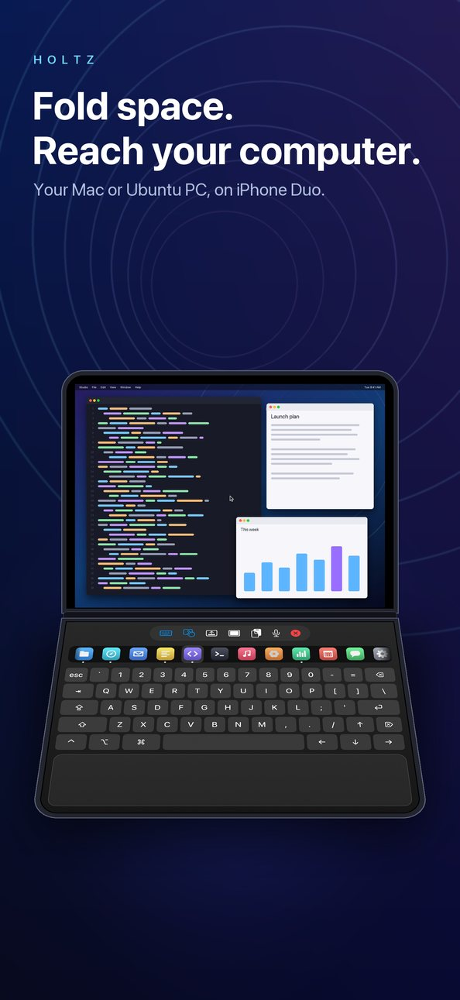
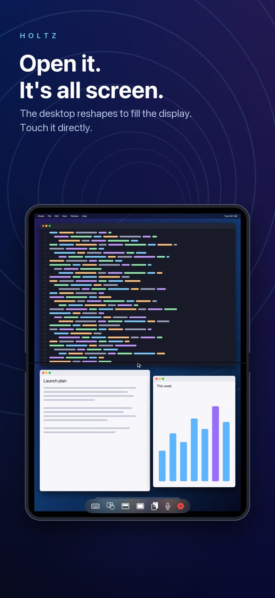
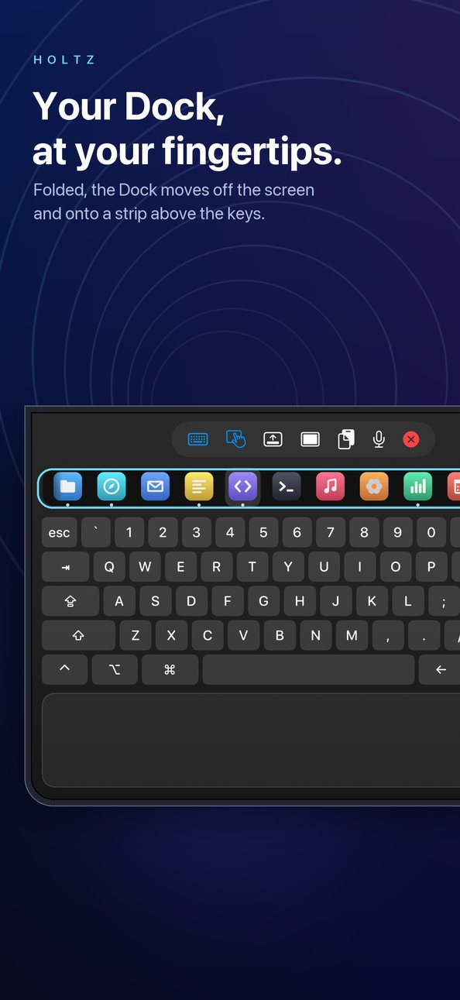

Fold space. Reach your computer.
Holtz puts your Mac or Ubuntu PC on iPhone Duo. Fold it and it's a laptop. Open it and it's all screen.
Ubuntu on ARM: arm64 .deb

Set up in three steps
Holtz Host runs on the computer. Holtz runs on the phone.
- Install Holtz Host on the computer and open it. On a Mac, allow Accessibility and Screen Recording when it asks. On Ubuntu, install the .deb and open Holtz Host from your apps.
- Pair your iPhone. Holtz Host shows a one-time code. Open Holtz on the iPhone, pick the computer and type the code.
- Fold, or open. Folded, the top half is the computer's screen and the bottom half is a keyboard and trackpad. Fully open, the whole display is the screen, and you touch it directly.
What it does
Built around the hinge.
The desktop fits the phone
The computer's display is reshaped to fill the screen you have, in any posture or orientation. Or keep its native resolution.
Your Dock, above the keys
Folded, the Dock moves off the screen and onto a strip above the keyboard. On the Mac, and on Ubuntu with the GNOME Dock.
Close the lid to pause
Fold the phone shut and the stream stops. Open it and carry on.
Speak to type
Dictation runs on the iPhone and types on the computer when you pause.
Copy between the two
Send the iPhone's clipboard to the computer, or bring the computer's to the iPhone.
From anywhere
Nearby, the phone finds the computer by itself. Away, switch on Remote access on both, which uses a free Tailscale account.
Yours alone
No Holtz account. No Holtz servers.
Direct and encrypted
The iPhone connects straight to your computer. Every connection is encrypted with a key only that iPhone and that computer hold.
One code, once
Pairing uses a one-time code shown on the computer. Remove an iPhone in Holtz Host and its key stops working.
An optional password
Set an access password on the computer and it is asked for whenever the iPhone connects from outside your network.
A closer look

